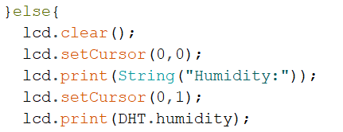

Program
Aplikacija na telefonu pošilja "1" ali "0" v Arduino preko Bluetooth-a, ta podatek lahko vidimo v Serial Monitorju.
Program nato preverja, če ima Serial monitor nove podatke in pogleda ali je nov podatek 1 ali 0.
Če je prejet podatek 1, nastavi spremenljivko "asd" na true, kar pa izpiše na LCD zaslon temperaturo.
Če je prejet podatek 0, nastavi spremenljivko "asd" na false, kar pa izpiše na LCD zaslon vlažnost.
Na koncu je še 2 sekundni premor.